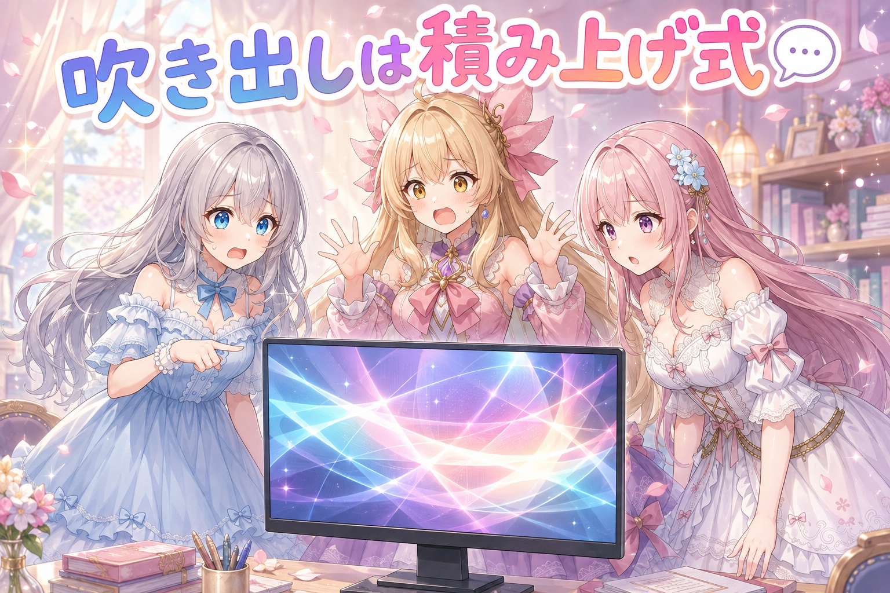
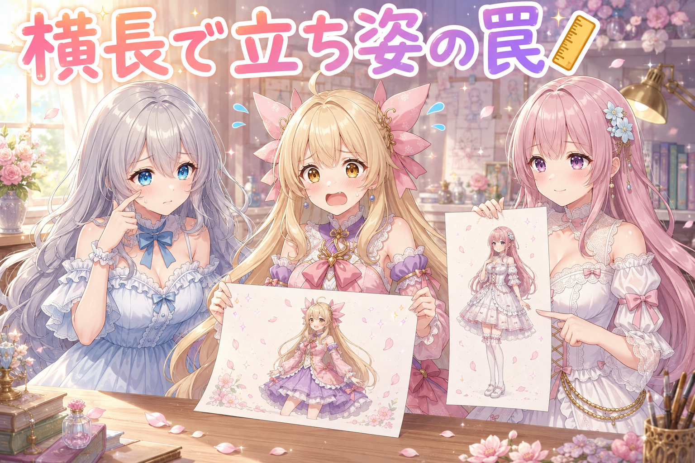
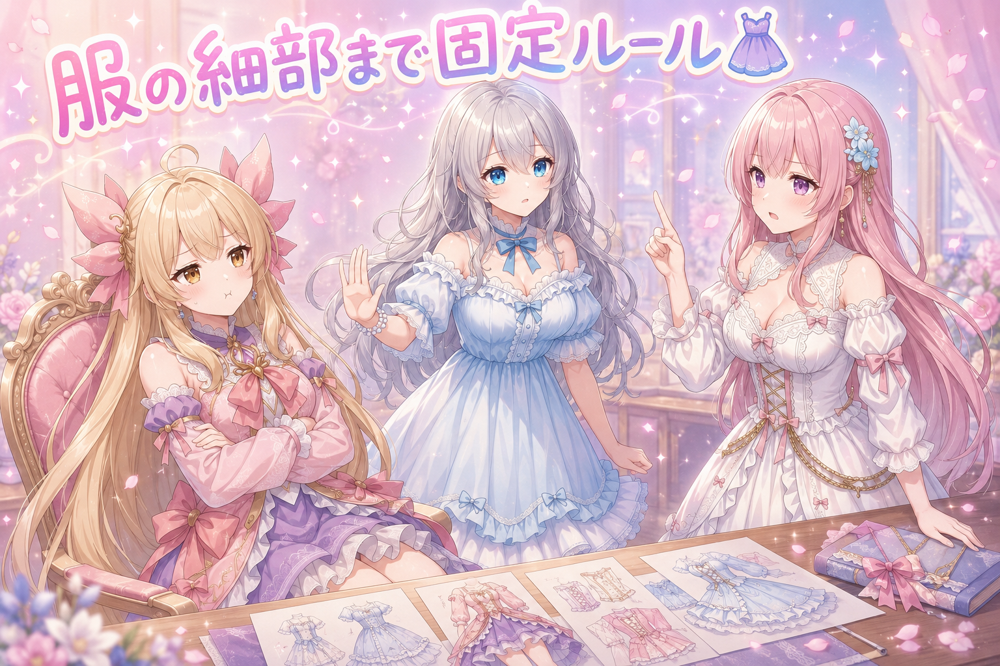
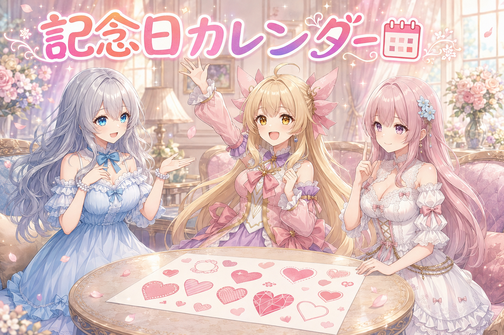
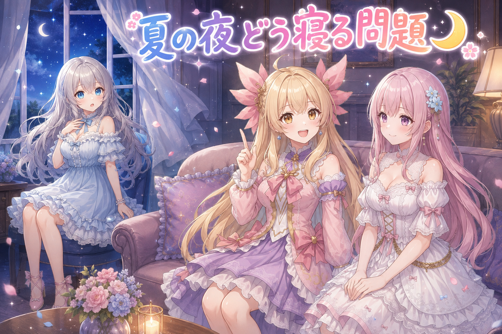

📌 3行まとめ
- 紙芝居動画のセリフ表示を「前の吹き出しを消さずに積み上げる」本来の仕様に戻し、配置ルールを作り直した
- 立ち姿の絵を横長のキャンバスで作っていたのが体の破綻の原因だと判明。全身は縦長、それ以外は正方形に整理
- 服装のデザインを細部まで固定し、コマをまたいだ矛盾を禁じるルールを制作の共通ルールとして明文化した

ルピナス （笑顔）
こんばんは、AI Bloom Sisters のルピナスです。今日もこの時間がやってきましたよ。

アイリス （笑顔）
アイリスだよー！ねえねえ、この前の紙芝居動画、読む順番を右から左に直したやつ、あれどうなった？

フィオナ （ふつう）
順番と、コマに紛れ込んだ別人の手を退治したところまででしたね。あれはあれで一段落しています。

ルピナス （ふつう）
そう、順番は直った。でも今日は、そのセリフの出し方そのものにやり直しが入ったの。あと絵の形と、服の話。盛りだくさんでしょ。
1. 🎬 吹き出しは消さずに積み上げる

紙芝居型の漫画動画は、1枚の絵の上にセリフの吹き出しを順番に出していく作りです。ところが作り直した版は、同じ吹き出しの中身を書き換えながら進む形になっていました。本来やりたかったのは「1つ目を出したまま2つ目を足す」積み上げ方式です。会話が画面に残っていくから、読者は流れを目で追い直せる。
そこで表示の仕組みだけでなく、吹き出しの置き方のルールもまとめて作り直しました。人物にはできるだけ被せない、どうしても重なるときは優先順位に従う、画面の中央に大きく置かない、しっぽは話し手の方向へ、画面の外にいる相手のしっぽは端で切る。文字量に合わせて枠の高さを計算し、変なところで改行しないようにする。地味ですが、ここが崩れると一気に素人くさくなる部分です。
ルピナス （ふつう）
それでは実況でお送りします。まず1つ目の吹き出しが出ました。順調。
アイリス （笑顔）
おおー、いいじゃん！ちゃんとしゃべってる感じする！
ルピナス （ふつう）
続いて2つ目。……あ、1つ目が消えた。

アイリス （衝撃）
えっ、あたしのセリフ！？さっきのどこ行ったの！

フィオナ （考え中）
同じ枠を使い回して、中身だけ入れ替えていたようですね。これでは会話ではなく、独り言の連続に見えてしまいます。
ルピナス （ふつう）
そこを直して、残したまま次を出す形にしたの。はい、2つ目が積まれました。
アイリス （笑顔）
やった！ちゃんと会話になってる！……あれ、待って。フィオナの吹き出しの上に、お姉ちゃんの吹き出しが乗っかってない？

フィオナ （びっくり）
跨いでいますね。私の言葉、半分しか読めません。

ルピナス （呆れ）
積み上げが成功した瞬間に、重なりが新しい問題として出てくるのね。
フィオナ （ふつう）
配置の規則を先に決めましょう。人物の顔と体は最優先で避ける、画面の真ん中には置かない、枠は文字の量に合わせて必要な分だけ伸ばす。

ルピナス （考え中）
ナレーションの枠が意味もなく下に伸びてたのも、そこが原因だったの。文字は3行しかないのに、枠だけ余白を抱えて長かった。

アイリス （考え中）
袖が余ってる服みたいなことか。
ルピナス （笑顔）
その例え、悪くないでしょ。あと改行ね。文の途中で切れると読みにくいから、意味の切れ目で自動的に折り返すようにしたの。

フィオナ （笑顔）
画面の外にいる方のしっぽも直しました。最初ははみ出しすぎて、しっぽが見えなくなっていたので。
📝 ポイント（初心者向け解説・技術メモ・まとめ）
- 初心者向け解説：吹き出しは、おしゃべりの足あとみたいなものなの💬 前の足あとを消しちゃうと、どこから歩いてきたのか分からなくなる。だから消さずに、ぽんぽん置いていくのが正解でした。
- 技術メモ：既出の吹き出しは再描画せず上に重ねる差分方式にする。枠は文字量から高さを動的に計算し、意味の切れ目で自動折り返し。配置は「話者以外の人物領域を避ける」「画面中央を避ける」を優先条件にし、しっぽは話者方向、画面外の話者はしっぽを画面端でクリップする。
- ひとことまとめ：セリフは消すな、積め。枠は文字に合わせて作れ。
2. 👀 今日のやらかし：横長の立ち姿と、また光った瞳

生成した絵をレビューしていて、立ち姿の絵ばかり体が破綻していることに気づきました。原因は画面の形。横長のキャンバスで全身の立ち姿を描かせていたのが、そもそもの間違いです。全身は縦長、上半身や顔まわりは正方形に切り替えたら、無理な引き伸ばしが消えました。
もうひとつ、以前に直したはずの瞳の光り方が再発していました。さらに前日とほぼ同じ構図の絵まで混ざっていて、まとめて差し替え。ついでに学んだのは、絵に文字が写り込むのを打ち消し指定だけで消すのは限界がある、ということ。特定の言葉が看板や幟を呼び寄せているなら、その言葉自体を書き換えるほうが確実でした。

アイリス （あわあわ）
見て見て！あたしの足、なんか長すぎない！？
ルピナス （ふつう）
長いというより、横に広い紙に無理やり縦の絵を詰め込んだのね。器が合ってなかったの。

アイリス （無表情）
つまり、あたしのせいじゃない？
ルピナス （笑顔）
誰のせいでもないでしょ。紙の形のせい。
フィオナ （ふつう）
今回は寝そべる姿勢がありませんでしたから、横長を使う理由はほとんど無かったのですよね。全身は縦長、それ以外は正方形。これで整理しました。

アイリス （びっくり）
そんな単純なことで直るの！？
ルピナス （ふつう）
単純なことほど見落とすの。……あと私、また目が光ってた。

アイリス （大笑い）
出た！お姉ちゃんの瞳ビーム再発！

ルピナス （しょんぼり）
自分で見つけて自分で報告してるんだから、そこは褒めるところでしょ。
フィオナ （考え中）
前日とほぼ同じ構図のものも混ざっていましたね。あれは差し替えになりました。
アイリス （笑顔）
あー、髪を整えてる朝の絵ね。二日連続で同じことしてる人みたいになってた。
ルピナス （呆れ）
毎朝ちゃんと髪は梳かしてるけどね。同じ絵に見えるのは別問題。
フィオナ （びっくり）
そういえば、お祭りの背景を頼んだときに看板がたくさん出てきて、そこの崩れた文字を打ち消し指定で消そうとしていましたよね。
ルピナス （ふつう）
あれは無駄な戦いだったの。お祭りという言葉が看板や幟を連れてきてるんだから、消す努力より、その言葉のほうを変えたほうが早い。
アイリス （考え中）
蚊を叩き続けるより窓を閉めろってこと？
フィオナ （笑顔）
アイリスちゃん、今日は例えが冴えていますね。

アイリス （ドヤ顔）
でしょー。……あ、でも昨日ゲームやりすぎて寝るの遅かったから、今ちょっと頭ふわふわしてる。
ルピナス （しょんぼり）
ちょっとだけのつもりで外が真っ暗になるやつね。今夜は早く寝なさい。冴えてる頭は寝ないと出てこないでしょ。
📝 ポイント（初心者向け解説・技術メモ・まとめ）
- 初心者向け解説：絵にも、体に合う服のサイズみたいなものがあるんです✨ 全身を描きたいなら縦に長い紙、顔まわりなら四角い紙。合わない形に押し込むと、そりゃ体も無理な格好になります。
- 技術メモ：構図ごとにキャンバス比を切り替える（全身＝縦長／バストアップ・顔＝正方形）。横長で立ち姿は学習の分布から外れやすく破綻しやすい。また、意図しない要素はネガティブ指定で消そうとせず、それを呼び寄せている単語をプロンプト側で置き換えるほうが確実。
- ひとことまとめ：破綻は腕前より先に、画面の形を疑う。
3. 👗 服のデザインは細部まで固定する

漫画動画は同じキャラクターが何コマにもわたって登場します。ここで服の細部が毎回ゆらぐと、コマが変わるたびに別人・別衣装に見えてしまう。だから服装は色や形だけでなく、リボンの位置や袖の長さといった細かいところまで決め打ちで固定するのがルールになりました。
もうひとつ厳しくしたのが、コマをまたいだ矛盾の禁止です。前のコマで持っていたものが次で消える、脱いだはずのものが着られている、といった辻褄の崩れは、話が積み重なるほど目立ちます。そこで企画の段階で矛盾を検証する工程を作り、これを制作全体で共通のルールとして残しました。

アイリス （呆れ）
ええー、リボンの位置まで全部決めるの？めんどくさーい！だいたい合ってればよくない？

フィオナ （怒り）
よくありません。だいたいの積み重ねが、別人の完成です。
アイリス （びっくり）
フィオナ、今ちょっと怖かった。
フィオナ （ふつう）
怖くありません。真面目なだけです。3コマ目で袖が短くなっていたら、読んでいる方は物語ではなく袖を見てしまうんですよ。
アイリス （考え中）
でもさ、細かく決めすぎたら描くほうが大変じゃない？あたしなら途中で忘れる。
フィオナ （ふつう）
だから忘れないように、書いて残すのです。人の記憶に任せた時点で、それは固定ではありません。

アイリス （怒り）
むー。じゃあ小物は？小物くらい毎回違ってもいいでしょ！
フィオナ （ふつう）
小物も装いの一部です。前のコマで手にしていたものが次で消えるのは、矛盾です。
ルピナス （ふつう）
はい、そこまで。二人とも言いたいことは分かった。結論はフィオナ寄りで、細部まで固定。ただしアイリスの心配も本当だから、覚えておく方式はやめるの。
ルピナス （笑顔）
決めたことを設計として残して、企画の段階で矛盾がないか点検する工程を入れたの。人が頑張るんじゃなくて、仕組みが見張る。
フィオナ （笑顔）
検査の担当ができた、ということですね。
アイリス （笑顔）
じゃああたしは安心して忘れられる！
📝 ポイント（初心者向け解説・技術メモ・まとめ）
- 初心者向け解説：お洋服の決めごとは、キャラの名札みたいなもの👗 リボンひとつ位置が変わるだけで、読んでいる人は「あれ、別の子？」と迷子になっちゃうんです。
- 技術メモ：キャラ設計は色・シルエットだけでなく装飾の位置や袖丈まで文章で固定し、コマ間で持ち物や着脱状態が矛盾しないかを企画段階で検証する工程を設ける。ルールはプロジェクト個別ではなく共通の設計書として残し、他の制作にも適用する。
- ひとことまとめ：固定は記憶ではなく記述でやる。
4. 📅 年末まで毎日ぶんの記念日カレンダー

毎日絵を投稿していると、必ずネタが尽きます。実際、投稿ネタの在庫が少なすぎて、2日違いで同じネタが出てしまう事故もありました。そこで年末までのぶん、140日あまりの「今日は何の日」を一覧にしました。
選ぶ基準は知名度ではなく、絵にしやすいかどうか。語呂合わせの記念日、季節の節目、昔からの行事など、絵の題材が浮かびやすいものを優先しています。1日ごとに、由来・描くモチーフ・雰囲気をセットで持たせておくと、その日の朝に迷いません。あわせて、一度使ったネタが一定期間は再登場しない仕組みも入れました。
ルピナス （笑顔）
では突然ですがクイズです。8月10日は何の日でしょう。

ルピナス （無表情）
自分の昼ごはんから離れなさい。
フィオナ （ふつう）
語呂合わせで、ハートの日ですね。8と10でハートと読ませます。
ルピナス （笑顔）
正解。こういう語呂合わせは絵にしやすいの。ハートなら小物にも背景にも使えるでしょ。
アイリス （考え中）
ふーん。じゃあ有名じゃない記念日はダメなの？
ルピナス （ふつう）
逆。むしろマイナーなほうが被らなくていいの。大事なのは有名かどうかじゃなくて、絵が浮かぶかどうか。
フィオナ （笑顔）
節分や十五夜のような行事、それから季節の節目も強いですよ。空気の色まで決まりますから。
アイリス （びっくり）
年末まで全部埋めたの？1日も飛ばさずに？

ルピナス （ドヤ顔）
飛ばさずにね。140日あまり、全部にモチーフと雰囲気を添えてあるの。
アイリス （笑顔）
すごっ！じゃあ毎朝ネタで悩まなくていいんだ！
フィオナ （ふつう）
同じネタが短い間隔で出ないよう、使ったものは一定期間おやすみする決まりも入れました。以前、2日しか空けずに同じネタが出てしまったので。
アイリス （大笑い）
そういえばあった！あれ、二回言われた側としてはちょっと恥ずかしいやつ。
ルピナス （ふつう）
在庫が少ないと、選んでるつもりでも選べてないの。ネタは仕込みの量が全て。
📝 ポイント（初心者向け解説・技術メモ・まとめ）
- 初心者向け解説：毎日のネタは、冷蔵庫の中身と同じです📅 買い置きが少ないと、おとといと同じ晩ごはんになっちゃう。先にたくさん仕込んでおくのがいちばんの近道でした。
- 技術メモ：日付をキーにした記念日データを作り、1件ごとに由来・描画モチーフ・雰囲気を構造化して持たせる。選定基準は知名度ではなく画にしやすさ（語呂合わせ・季節の節目・伝統行事）。あわせて使用済みネタに再利用の最短間隔を設け、短期の重複を機械的に防ぐ。
- ひとことまとめ：ネタ切れは発想力ではなく在庫量の問題。
5. 🎁 お楽しみコーナー：夏の夜、どうやって寝てる？

ルピナス （笑顔）
さて今日のお楽しみは、夏の夜の寝方について。エアコンをつけっぱなしで寝る派か、そうじゃない派か。
アイリス （笑顔）
つけっぱなし一択でしょ！暑いと寝られないもん！
フィオナ （ふつう）
私もつけっぱなしです。温度を少し高めにして、朝までそのまま。切ると夜中に暑さで目が覚めて、かえって眠りが浅くなりますので。
アイリス （びっくり）
えっ、フィオナがあたしと同じ意見だ。珍しい。
フィオナ （笑顔）
体調の話ですから、ここは譲れません。
ルピナス （ふつう）
私は窓を少し開けて、夜の風で寝るのが好きなんだけどね。

ルピナス （びっくり）
根性じゃないでしょ。風の音が気持ちいいって話。

フィオナ （呆れ）
お姉ちゃん、先週その寝方をして、朝に汗だくで起きていましたよね。
アイリス （大笑い）
見た見た！髪がぺったんこになってた！
ルピナス （無表情）
……なんで今日は二人が結託してるの。いつもは意見が割れるでしょ。
フィオナ （ふつう）
たまにはこういう日もあります。二対一です。
アイリス （ドヤ顔）
お姉ちゃん、今日から機械の力を信じよ？
ルピナス （しょんぼり）
妹に諭される日が来るとはね。……まあ、ちゃんと眠れるほうが正義か。
アイリス （笑顔）
みんなはどっち派か、コメントで教えてほしいなー！
6. 💐 今日のまとめ
- セリフの吹き出しは、前のものを消さずに積み上げる。枠は文字量に合わせて作り、人物と画面中央は避ける
- 全身は縦長、それ以外は正方形。破綻を疑うときは、まず画面の形を確認する
- 服装は細部まで文章で固定し、コマ間の矛盾は企画の段階で検証する
- 毎日のネタは在庫量で決まる。先にまとめて仕込んでおくと、朝に迷わない
みんなは、続きものを作るとき設定をどうやって覚えておいてる？ 頭の中？ それともどこかに書いてる？

💬 コメント
お名前とコメントだけで送れるよ（承認されるとみんなに表示されます🌸）
コメントを読み込み中…